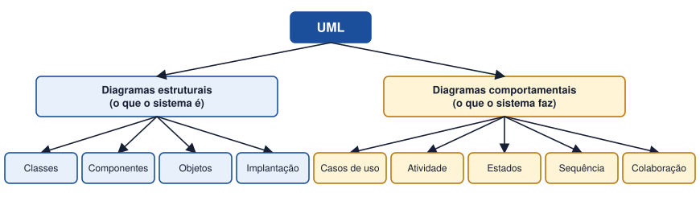

Tema 17 · UML e modelação do comportamento
Introdução à UML
Objetivos e importância da linguagem de modelação
A UML (Unified Modeling Language, Linguagem de Modelação Unificada) é uma linguagem gráfica normalizada para especificar, visualizar e documentar sistemas de software. Não é uma metodologia nem uma linguagem de programação: é um conjunto de diagramas com notação comum.
Porquê usar UML
- Cria uma linguagem comum entre clientes, analistas e programadores.
- Permite compreender e discutir o sistema antes de o construir.
- Serve de documentação para quem fizer a manutenção.
- Pode ser usada em qualquer fase e com qualquer modelo de desenvolvimento.
Famílias de diagramas

| Diagrama | Finalidade | Pergunta a que responde |
|---|---|---|
| Casos de uso | Funções do sistema do ponto de vista dos atores. | Quem faz o quê com o sistema? |
| Atividade | Fluxo de um processo. | Que passos e decisões compõem o processo? |
| Estados | Ciclo de vida de um objeto. | Em que estados pode estar e o que provoca a mudança? |
| Sequência | Troca de mensagens ao longo do tempo. | Quem fala com quem e por que ordem? |
| Colaboração (comunicação) | Ligações entre objetos e mensagens. | Que objetos colaboram para cumprir uma função? |
| Classes | Estrutura: classes, atributos, métodos, associações. | Como está organizado o sistema? |
| Componentes | Módulos de software e dependências. | De que partes é feito o sistema? |
A UML complementa o modelo ER e o DFD. O ER descreve os dados; os diagramas UML mostram as funções e o comportamento do sistema.
Atividade
Identificar diferentes diagramas UML e respetivas finalidades
Indique o diagrama UML mais adequado para responder a cada situação:
- Mostrar o que um leitor e um bibliotecário podem fazer com o sistema.
- Representar as várias fases pelas quais passa uma encomenda.
- Descrever, passo a passo, o processo de inscrição de um leitor, com decisões.
- Mostrar a troca de mensagens entre o ecrã, o servidor e a base de dados quando se faz login.
- Representar as classes Leitor, Livro e Empréstimo com atributos e métodos.
- Mostrar os módulos de uma aplicação e as dependências entre eles.
Ver proposta de resolução
| Situação | Diagrama |
|---|---|
| a) | Casos de uso |
| b) | Estados |
| c) | Atividade |
| d) | Sequência |
| e) | Classes |
| f) | Componentes |
Em resumo
- A UML é uma linguagem gráfica normalizada para modelar sistemas de software.
- Os diagramas dividem-se em estruturais (o que o sistema é) e comportamentais (o que faz).
- Cada diagrama responde a uma pergunta diferente e complementa os restantes.